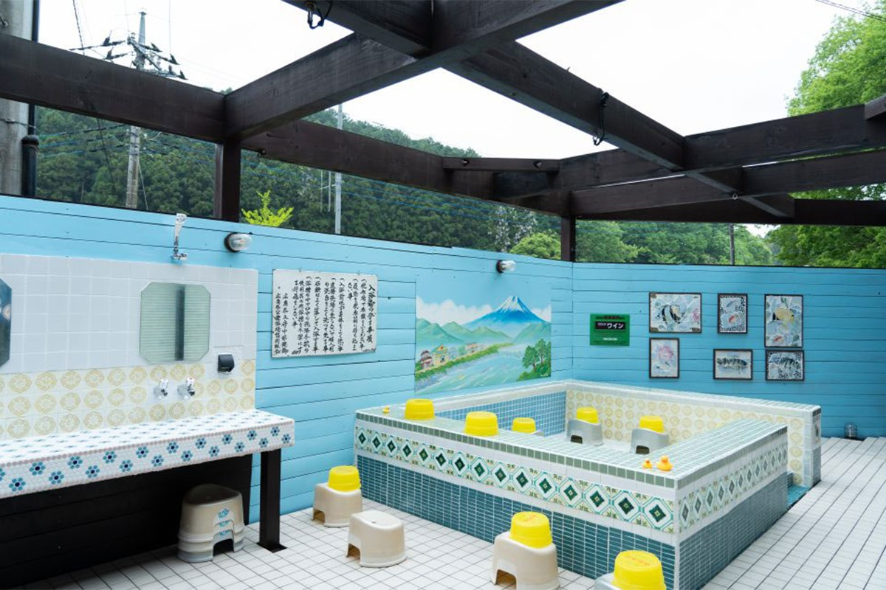
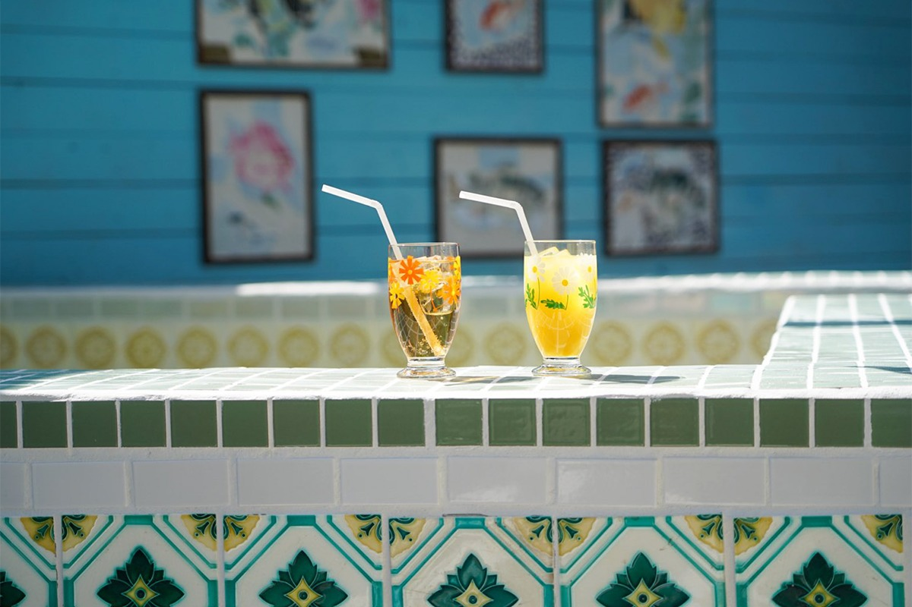
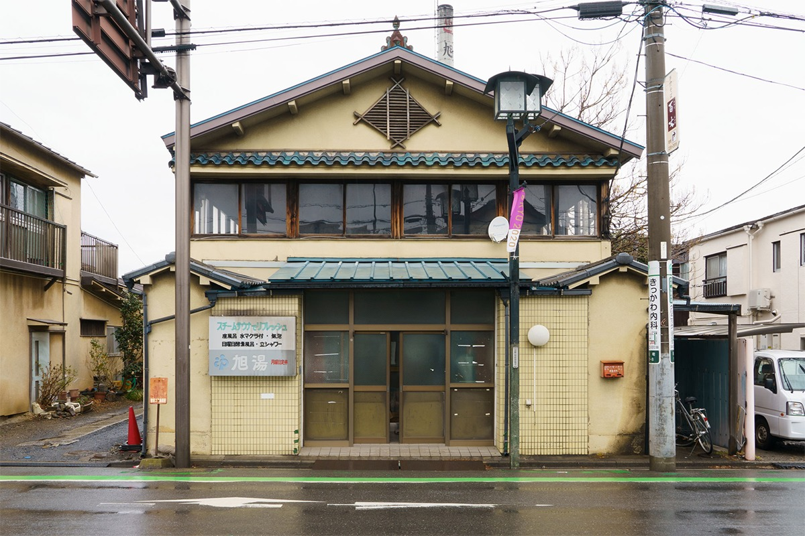
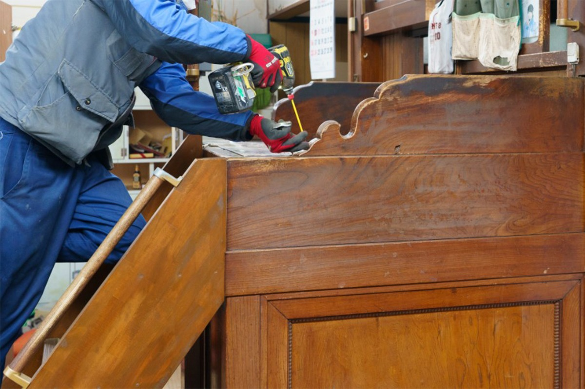
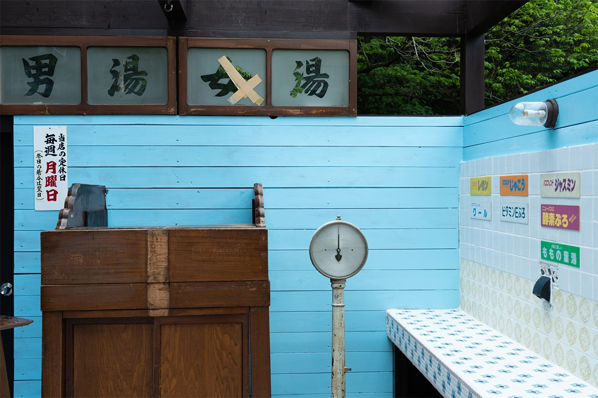
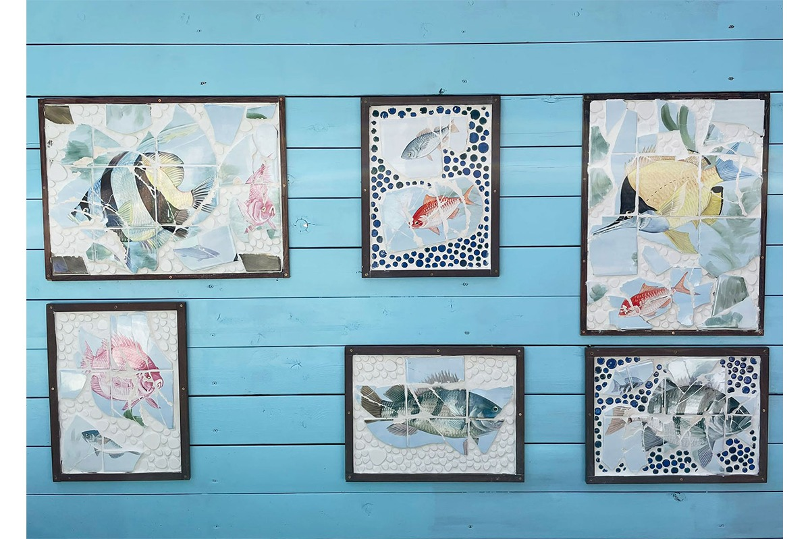
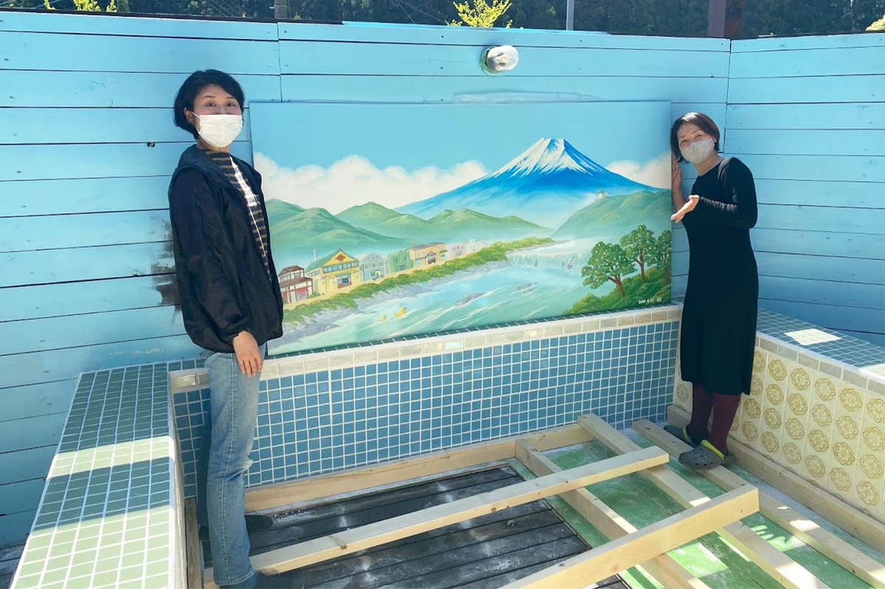
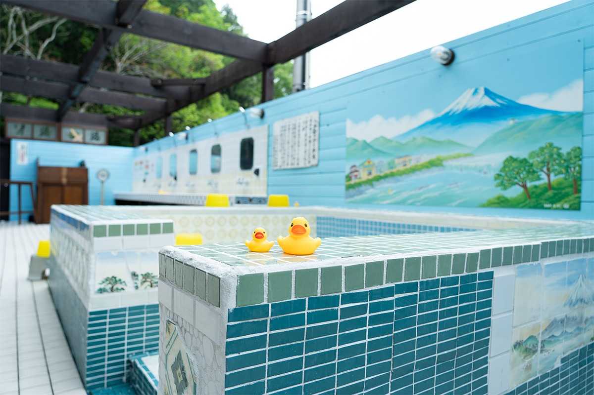

Префектура Сайтама · Токигава · онсэн
Онсэн «Тамагава» в Токигаве: терраса из плитки закрытых городских бань

В горной Токигаве работает онсэн «Тамагава», устроенный как японская баня середины прошлого века. В 2021 году здесь открыли террасу-кафе, собранную из того, что осталось от двух закрытых бань префектуры.
Онсэн
Баня в стиле эпохи Сёва
Токигава это небольшой город среди холмов префектуры Сайтама. Здесь стоит онсэн «Тамагава»: горячий источник, оформленный как старый городской сэнто, общественная баня времён Сёва (1926–1989). Его ведёт компания «Онсэн Додзё», основанная в 2011 году: она управляет банями и курортами, в основном в Сайтаме, а своей целью называет «нести культуру через баню».
29 апреля 2021 года, в День Сёва, при онсэне открылась терраса-кафе «Сэнто кисса Тамагава терасу». Почти всё в ней раньше принадлежало другим баням.

История
Последняя баня Кавагоэ
В Кавагоэ, одном из крупных городов префектуры, до 2021 года работала последняя общественная баня. «Асахию» проработала 77 лет, с послевоенных времён, и в марте 2021 года закрылась. Вместе с ней с улиц города исчезла последняя банная труба.

В «Тамагаве» о закрытии узнали за год. Чтобы японская банная культура не ушла бесследно, команда онсэна договорилась с хозяином «Асахию», забрала мебель и вещи бани и поставила их в своей раздевалке и других помещениях.


Плитка
Картины, снятые со стен
Об этой работе узнал постоянный посетитель «Асахию» из Кумагаи, города на севере префектуры, и попросил сохранить и память о своей бане с тем же названием. Так «Тамагава» получила вещи и оттуда.
В обеих банях были плиточные картины, и оба здания шли под снос, а вместе с ними работа старых мастеров. Управляющая онсэном и сотрудники сами снимали плитку по одной, а потом собрали её заново, каждую картину как единое полотно.

Картина
Фудзи над Токигавой
Из спасённых вещей и сделали «Тамагава терасу». Не хватало только того, без чего не бывает японской бани: большой картины на стене. Её написала Мидзуки Танака, одна из трёх художников в Японии, которые в 2021 году ещё писали такие банные картины краской.
На картине природа Токигавы, а вместе с ней обе закрытые бани: «Асахию» из Кавагоэ и «Асахию» из Кумагаи.

Терраса служит новым местом отдыха после бани, и на 2021 год здесь собирались подавать лёгкие закуски. Вещи, с которыми у многих людей связаны воспоминания, получили вторую жизнь там, где люди снова собираются в тепле.

Онсэн «Тамагава»
- Адрес
- префектура Сайтама, уезд Хики, Токигава, Тамагава, 3700
- Телефон
- +81 493-65-4977
- Часы работы
- будни 10:00–22:00, выходные и праздники 5:00–22:00 (последний вход в 21:30)